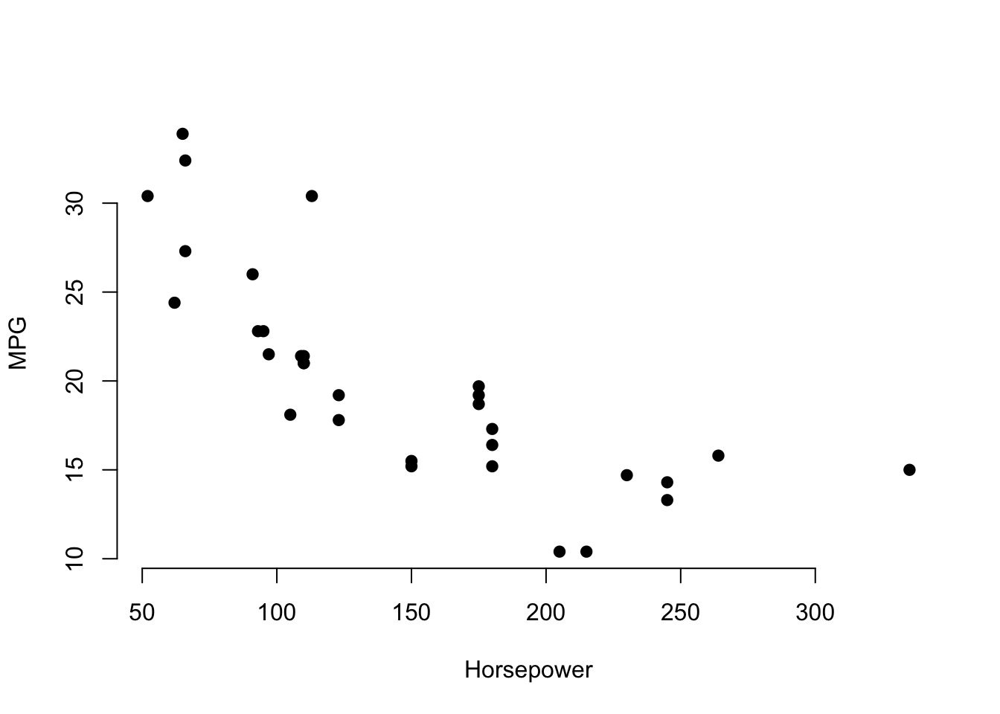
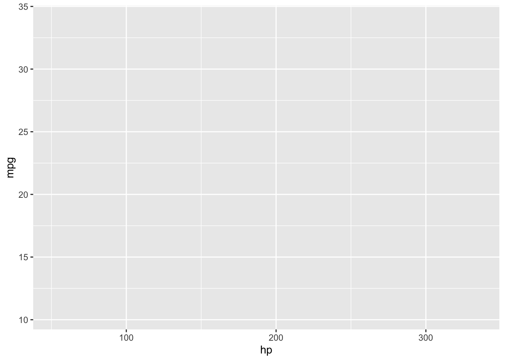

Chapter 3 CHAPTER 1
3.1 Loading Libraries
First, let’s load the libraries you will use for this lesson. This is the first thing you should do when writing an R-Markdown document. That way, you ensure that you load all of the necessary libraries prior to running code
# install.libraries("gglot2") <- installing libraries require double qoutations ""
# install.libraries("rmdformats")
library(ggplot2) # <- loading libraries doesn't require double qoutations## Warning: package 'ggplot2' was built under R version 3.6.2Before going into the ins-and-outs of coding in R, let’s get familiar with
how we can use R-markdown to create chunks of code.
3.2 Creating code chunks in R-Markdown
alt + command + i (mac)
control + alt + i (windows)
Each chunk of code can be run individually.
## [1] 63.3 Running chunnks
You can run the chunk of code by clicking on the green arrow to the right of the code.
Or use theses shortcuts<br)
command + enter (mac)
control + enter (windows)
## The very basics
##$ Simple Caluations
## [1] 4## [1] 53.4 Assignment
We assign values to variables by using <-
Assigning a, b, and c
3.6 Exploring Data
3.7 mtcars data
This data is pre-installed in R, and provides a quick way to fiddle around with coding.
We can see the data by simply typing mtcars
## mpg cyl disp hp drat wt qsec vs am gear carb
## Mazda RX4 21.0 6 160.0 110 3.90 2.620 16.46 0 1 4 4
## Mazda RX4 Wag 21.0 6 160.0 110 3.90 2.875 17.02 0 1 4 4
## Datsun 710 22.8 4 108.0 93 3.85 2.320 18.61 1 1 4 1
## Hornet 4 Drive 21.4 6 258.0 110 3.08 3.215 19.44 1 0 3 1
## Hornet Sportabout 18.7 8 360.0 175 3.15 3.440 17.02 0 0 3 2
## Valiant 18.1 6 225.0 105 2.76 3.460 20.22 1 0 3 1
## Duster 360 14.3 8 360.0 245 3.21 3.570 15.84 0 0 3 4
## Merc 240D 24.4 4 146.7 62 3.69 3.190 20.00 1 0 4 2
## Merc 230 22.8 4 140.8 95 3.92 3.150 22.90 1 0 4 2
## Merc 280 19.2 6 167.6 123 3.92 3.440 18.30 1 0 4 4
## Merc 280C 17.8 6 167.6 123 3.92 3.440 18.90 1 0 4 4
## Merc 450SE 16.4 8 275.8 180 3.07 4.070 17.40 0 0 3 3
## Merc 450SL 17.3 8 275.8 180 3.07 3.730 17.60 0 0 3 3
## Merc 450SLC 15.2 8 275.8 180 3.07 3.780 18.00 0 0 3 3
## Cadillac Fleetwood 10.4 8 472.0 205 2.93 5.250 17.98 0 0 3 4
## Lincoln Continental 10.4 8 460.0 215 3.00 5.424 17.82 0 0 3 4
## Chrysler Imperial 14.7 8 440.0 230 3.23 5.345 17.42 0 0 3 4
## Fiat 128 32.4 4 78.7 66 4.08 2.200 19.47 1 1 4 1
## Honda Civic 30.4 4 75.7 52 4.93 1.615 18.52 1 1 4 2
## Toyota Corolla 33.9 4 71.1 65 4.22 1.835 19.90 1 1 4 1
## Toyota Corona 21.5 4 120.1 97 3.70 2.465 20.01 1 0 3 1
## Dodge Challenger 15.5 8 318.0 150 2.76 3.520 16.87 0 0 3 2
## AMC Javelin 15.2 8 304.0 150 3.15 3.435 17.30 0 0 3 2
## Camaro Z28 13.3 8 350.0 245 3.73 3.840 15.41 0 0 3 4
## Pontiac Firebird 19.2 8 400.0 175 3.08 3.845 17.05 0 0 3 2
## Fiat X1-9 27.3 4 79.0 66 4.08 1.935 18.90 1 1 4 1
## Porsche 914-2 26.0 4 120.3 91 4.43 2.140 16.70 0 1 5 2
## Lotus Europa 30.4 4 95.1 113 3.77 1.513 16.90 1 1 5 2
## Ford Pantera L 15.8 8 351.0 264 4.22 3.170 14.50 0 1 5 4
## Ferrari Dino 19.7 6 145.0 175 3.62 2.770 15.50 0 1 5 6
## Maserati Bora 15.0 8 301.0 335 3.54 3.570 14.60 0 1 5 8
## Volvo 142E 21.4 4 121.0 109 4.11 2.780 18.60 1 1 4 2If you want to see less rows you can use the function head
## mpg cyl disp hp drat wt qsec vs am gear carb
## Mazda RX4 21.0 6 160 110 3.90 2.620 16.46 0 1 4 4
## Mazda RX4 Wag 21.0 6 160 110 3.90 2.875 17.02 0 1 4 4
## Datsun 710 22.8 4 108 93 3.85 2.320 18.61 1 1 4 1
## Hornet 4 Drive 21.4 6 258 110 3.08 3.215 19.44 1 0 3 1
## Hornet Sportabout 18.7 8 360 175 3.15 3.440 17.02 0 0 3 2
## Valiant 18.1 6 225 105 2.76 3.460 20.22 1 0 3 13.8 pressure data
We can see that there are only two variables in the pressure data
## temperature pressure
## 1 0 0.0002
## 2 20 0.0012
## 3 40 0.0060
## 4 60 0.0300
## 5 80 0.0900
## 6 100 0.27003.9 Graphing Data
We can use the plot function to create a scatter plot for the pressure data

3.10 A Note on Arguments
Notice that functions in R always have () beside them
head(mtcars)
plot(pressure)
In R, we put our arguments (which are extra things we want the argument to do)
inside these parentheses.
## Intro to ggplot library and functions
Remember to make sure ggplot is loaded into R.
You can do this by running the first chunk of this document, where it has the
code library(ggplot2)
We want to plot how miles per galon mpg is related to horsepower hp.
And then we want to split this up by cylnders cyl.
for ggplot, our first argument will be the dataset mtcars

3.11 aes() function for stating your x and y axis
Within the ggplot() function, we’ll set up our parameters by using the aes() function
aes stands for asthetic. For this function, we want to define the x and y axis.
The x-axis will be hp and the y-axis will be mpg

3.12 The power of +
3.13 Adding features to your ggplot graph using +
We can add new features by using other functions that are part of the ggplot library.
We do this by using the + sign
## geom() function for stating the kind of graph you want
geom stands for geometric unit.
Now let’s use the geom family of functions to state what kind of graph we want.
We want a scatterplot, so we are going to use the function geom_point()
No arguments are required for geom_point()

3.14 theme() function for modifying components of your graph
let’s set the size of the text by 20 using text = element_text(size = 20)

3.15 labs() function for labeling your graph
ggplot(mtcars, aes(x = hp, y = mpg)) +
geom_point() +
theme(text = element_text(size = 20)) +
labs(x = "Horsepower", y = "MPG")
3.16 scale_color_gradient() function for using a color gradient on mpg
We want the low mpg to be blue and the high mpg to be red.
IMPORTANT! In order to make this function work, you have to state which variable
you want it to color. Let’s color mpg.
In order to state this, we have to go back to the aes() function and write an additional argument. Remember, arguments are separated by ,
So your aes code should look like this now aes(x = hp, y = mpg, color = mpg)
ggplot(mtcars, aes(x = hp, y = mpg, color = mpg)) +
geom_point() +
theme(text = element_text(size = 20)) +
labs(x = "Horsepower", y = "MPG") +
scale_color_gradient(low = "red", high = "blue")
3.17 facet_grid() function splitting up the graph by a group
We want to split our graph up by the variable cyl
use .~cyl to get a horizontal verison
ggplot(mtcars, aes(x = hp, y = mpg, color = mpg)) +
geom_point() +
theme(text = element_text(size = 20)) +
labs(x = "Horsepower", y = "MPG") +
scale_color_gradient(low = "red", high = "blue") +
facet_grid(.~cyl)
use cyl~. to get a vertical verison.
ggplot(mtcars, aes(x = hp, y = mpg, color = mpg)) +
geom_point() +
theme(text = element_text(size = 20)) +
labs(x = "Horsepower", y = "MPG") +
scale_color_gradient(low = "red", high = "blue") +
facet_grid(cyl~.)
3.18 Learning More About Libraries and Functions
If you want to see more information about what you can do with a library like
ggplot2, you can put ? in front of the name of the library.
If you want to know more about how to use a specific function
put a ? in front of the function name
You can even do this with sub-functions, like element_text()